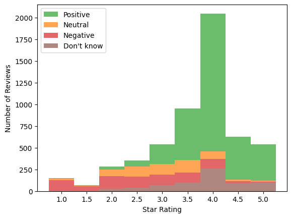
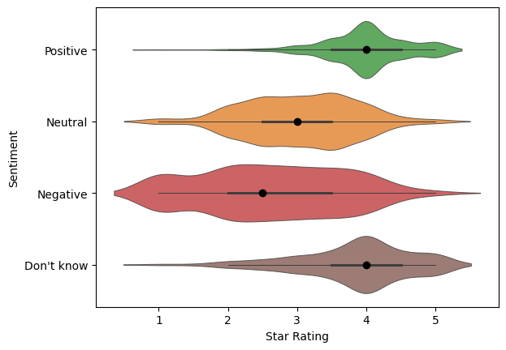
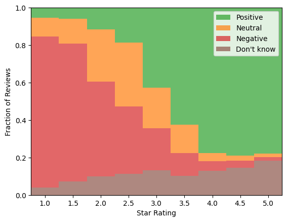
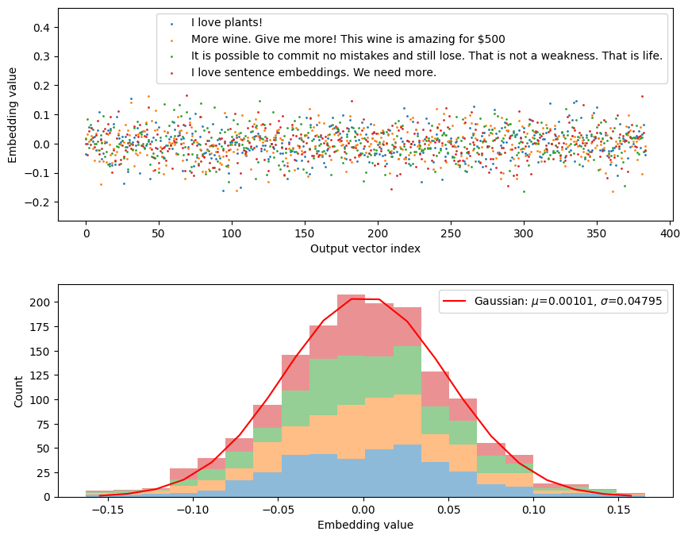
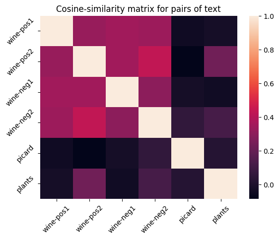
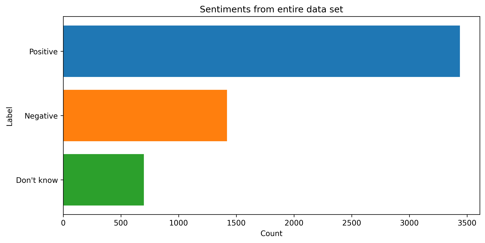
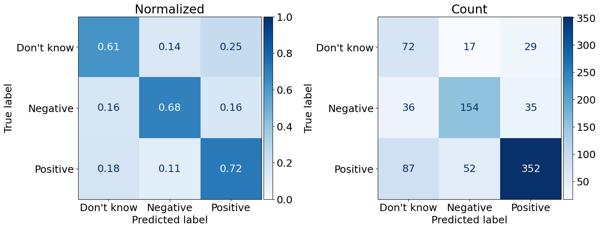
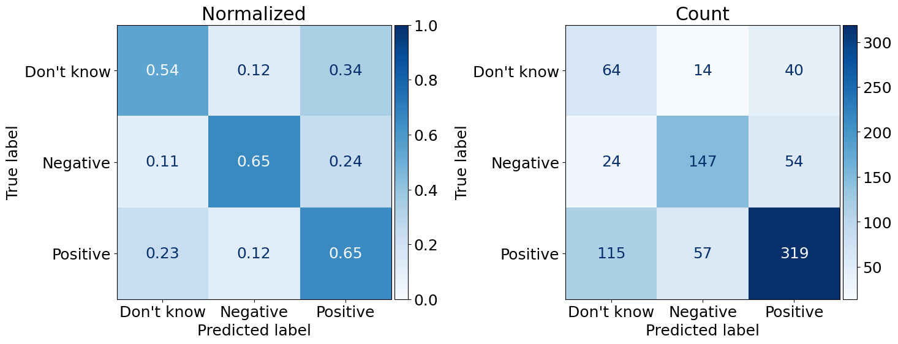

This is a picture of an LCBO store in Toronto, Canada. All of the wines are exciting to look at and I want to try some! But, how will I know what’s good? There’s thousands to choose from! Looking on their app, I found two things:
The interesting bottles had very few reviews
I confirmed that I do not know much about wine, so reviews aren’t all that helpful
I gave up and asked an LCBO wine guide for recommendations. Both of the bottles recommended were horrendous. The bite to my wallet hurt too.
An incredibly popular wine app, Vivino, is great at identifying wines using their image recognition software. But, I’m not going to stand around all day taking pictures of wine. It is good at filtering out which bottles have under 4-stars. But, I would also like a good deal after my expensive experience.
Image recognition feature on the Vivino app. Image by David Silverman/Getty Images
“You have to spend a little to discover.”
My goal is to increase the odds of finding well-priced discoveries. Using Natural Language Processing and machine learning techniques, I identify wines at the LCBO with high price-sentiments based on Vivino reviews. Here’s how I did it.
What is price-sentiment data?
I noticed about 0.5% (~1 in 200) of reviews on Vivino contain (1) the price a user paid, and (2) the sentiment for that price. Samples of reviews with “price-sentiment” are shown in the diagram below.
price_sentiment_diagram.png
I realized that with enough price-sentiment reviews, I could estimate whether a bottle’s price was “good” based on what everyone else has paid. For example, the bottle above sells for $13.99 and found users who:
paid more than $13.99 and liked the price, and
paid less than $13.99 and disliked the price
There are several dozens of bottles at the LCBO with 10k to 100k+ reviews on vivino. That translates into roughly 50 to 500 price-sentiment reviews. That is quite a lot of data per bottle and sufficient to inform a recommendation algorithm. So, let’s make one!
Part 1: Scraping Wines and Reviews
I created a bot on GitHub Actions to scrape all of LCBO’s 9k+ wine data. The data is uploaded to my postgreSQL database. For more details, check out these blogs:
I matched the LCBO wines to wines on Vivino using their explore API. The API returns several candidate results ranked by similarity. However, sometimes the first result is not correct due to their being numerous wines and vintages with similar names. For example, Mike Weir Chardonnay, Mike Weir Limited Edition Barrel Fermented Chardonnay, Limited Edition 4 Barrel Chardonnay. A simple verification for the matches is to minimize the intersection of words contained in two wine names.
After that, I obtained 6M reviews from Vivino for wines available at the LCBO using Vivino’s API. I look into the reviews here.
Part 2: Selecting Reviews with Prices
Reviews containing a price are identified by looking for dollar signs immediately adjacent to an integer or flow. For example, “$50”, “39.99$”.
Code: Use regex for price (integer) amount
import mathimport redef getPrice(text):ifnot text: # Reject empty stringsreturnNone# Return text if dollar sign is head: E.g., "Paid $10 bucks" --> "$10" textLeadDollarSign = re.search(r'\w*\$\d+(?:\.\d+)?\w*', text) if textLeadDollarSign: textPrice = textLeadDollarSignelse:# Return text if dollar sign is tail: E.g., "Paid 10$ bucks" --> "10$" textTailDollarSign = re.search(r'\w*\d+(?:\.\d+)?\$\w*', text) textPrice = textTailDollarSign# Reject no resultsifnot textPrice:returnNone# Get float representing price. textPrice = textPrice.group(0) textPrice = re.search(r'\d+(?:\.\d+)?', textPrice).group(0) textPrice = textPrice.replace('$','') # Delete '$' sign price =int(math.ceil(float(textPrice))) # Round up to nearest dollarreturn price
This rule-based filter found approximately 55k reviews contain prices.
Samples of reviews with prices
Rating
Review
2
Just a simple quaffer. Not much going on here at all. Have with salads or Thai food. Good with take-out sushi. Decent value at $11 but not textbook Viognier.
3.5
It’s very popular, but not my cup of vino given the “juicy” style; as opposed to tannic big cabs that I prefer. All in all would definitely drink again but only buy it for myself at a sub $50 pp
3.5
Very nice. Much more expensive in a restaurant. If you can find it for $15… buy some.
4
Tasted w/Nat at Russ’s Wine & Food Experience 2018 (Reserve Room selection) at Embassy Suites 2/23/18. 100% Cabernet Sauvignon. Well structured with complex aromas of plum jam, green pepper, raising, tobacco and touch of oak. Balanced in the mouth with soft and ripe tannins. $19.99
4
I picked this up at a Kroger after an impromptu wine tasting there. Under $10! This is an excellent value for the price! I’m NOT generally an American Chardonnay kid either (I’m not even sure what possessed me to try it!), but this is nice! Golden straw in the glass. Warm lemon curd and fresh lime zest on the nose. Pineapple, clementine and honeydew on the palate. Balanced, fresh and lovely. It’s an absolute win.
Wine Enthusiast: 90pts
Part 3: Training Data
A common strategy for curating training data in sentiment analysis is to select 1-star and 5-star reviews and assume they represent negative and positive sentiments. An alternative is to label reviews manually. While manual labelling requires substantial time to complete, there are several benefits that cannot be overlooked:
Reviews can highlight limitations of your classification rules. Perhaps labelling reveals 5% of reviews cannot be definitively classified as positive or negative. So, a third class is necessary since 5% missclassification may be an unacceptable loss-margin for your use case. Alternatively, 5% may be an acceptable loss-margin that supports your strategy to dismiss the class entirely.
A set of undiscovered problematic reviews are found and filtered out with an additional pre-processing layer. This could save headaches when interpreting confusing results. E.g., How does your model perform with emojis?
Identifying words with dual sentiments are beneficial tests if you are incorporatinga Large Language Model (LLM). For instance, the reviews “This price is a steal” and “They’re stealing your money” are often labelled negative by LLMs due to the body of text it was trained on.
Building domain knowledge gives insight into what is valuable and talked about in a community. This can help provide direction for your project.
Learning the wine nomenclature can improve the quality and depth of your presentations!
My primary reason to manually label data is to learn new techniques. I also treat the labelled dataset as “tracer particles” to observe how other sentiment analyses perform. For instance, I can measure what fraction of manually labeled sentiments are misclassified by the 1-5-star strategy introduced earlier.
So. I ended up with 5,500 manually labelled price-sentiment reviews! This sounds like a lot, and fortunately it is! But, keep in mind that (1) it was fun to label them, (2) I had help, (3) there is a 520-character limit, and (4) most reviews look like “good deal for $6” which is very fast to label.
Let’s see the data!
Samples of labelled price-sentiments
Rating
Sentiment
Review
4
Positive
Fruity, dry, good value at $10.99
4.5
Positive
Spot on for what it is. Woody, leather, dried fruits, vanilla, and more. Great buy under $15
3.5
Neutral
Hey it’s a $10 bottle. Not that bad for the money.
3.5
Neutral
Disappointing Barolo but worth the just under $30 price tag. Satisfactory wine nothing to write home about.
1.5
Negative
I didn’t like this cab enough to justify the $20 price- there’s several less expensive reds I like better.
3.7
Negative
Not worth the 50$
4.5
Don’t know
Clear classic
On it’s Way Down
Paid 70$ in 2000
5
Don’t know
10/22/202
Bought at Costco $7.99. Really liked, not overly sweet and has a nice selection rich taste with substance.
Frequency of Price-Sentiment
Sentiment
Proportion
Positive
0.62
Neutral
0.11
Negative
0.15
Don’t know
0.13
I use four labels to categorize my reviews with the following guidelines/rules:
Positive: Explicitly positive sentiment on price.
Neutral: Mixed or lack of sentiment on price.
Negative: Explicitly negative sentiment on price.
Don’t know: Missing sentiment on price.
The distribution of price-sentiments is shown on the right margin. Nearly 2/3 of price-sentiments are positive. The remaining sentiments are of similar magnitude ~13%.
Note: a neutral sentiment is not positive or negative (see Vryniotis for a nice discussion). For example, “not bad” is not automatically “good”.

Figure 1: Price-sentiment histograms across star-rating

Figure 2: Price-sentiment violin plots across star-rating
Its no surprise that price-sentiments and star ratings are correlated. It is surprising to see the neutral sentiments resting distinctly between 2- and 4-stars with small tails. This supports the neutral category being a real third category in sentiment analysis, and it is nearly equal in proportion to the negative sentiments.
Selecting 1- and 5-star reviews as proxies for negative and positive sentiment appears reasonable after considering the relative contributions from each sentiment per rating. The ratio of positive-to-negative sentiments above 4.5 stars is 26-to-1. The ratio of negative-to-positive sentiments below 1.5 stars is 14-to-1. This suggests approximating the price-sentiment with the star rating may be viable.
The figure below shows “Don’t know” sentiments lean towards higher star-ratings. This suggests there may be more “Don’t knows” will be falsely predicted as positive than negative. This is a better than the opposite considering how the neutral and negative sentiments are a minority class.

Partisan Sentiment! Neutral is negative
After running a couple experiments, it became immediately clear that most neutral sentiments are falsely classified as positive or negative. This is because distinguishing “not bad” from “good” requires a lot more samples to capture context and language 1. I decided to combine the neutral and negative categories as negative because:
I am less likely to purchase a bottle considered “not bad”, let alone a bottle that is “not good”. This is my bias.
The neutral and negative categories generally overlap with respect to star-ratings.
The pool of negative sentiment data is doubled.
Eliminating a category eliminates a set of potential false classifications.
Part 4: Define A Metric
The “best” model requires (A) definitions of success, (B) models to compare to, and (C) costs or economics of running these models (i.e., do I need a supercomputer?). Models also have a shelf-life because the environment is not static (e.g., culture, technologies, ideas). Your model may create feedback and change the dynamic of the environment too. For instance, if you modelled the stock market and made a ton of money, you’re influence affects stocks and will eventually weaken your original model.
Let’s define the nature of our product and understand what would be a successful outcome from a model.
Product goals:
The current deliverable is a recommendation scale. As stated in the introduction, the number of positive and negative sentiments (conditional on price) generates the following sentiment-ratio to the user:
56 out of 61 recommend this price!
7 out of 10 recommend this price!
Misclassifying a “7 out of 10” (truth) as a “6 out of 10” (model) by 10% may be sufficient to dissuade a customer. Likewise, a customer may decide to buy a bottle with a falsely higher sentiment-ratio. Therefore, the positive and negative categories are both important to get right. We value both precision and recall for both categories.
The “Don’t knows” (DKs) are often neglected in these types of analyses. DKs effectively act as noise burying our desired signal. Noise can act unfairly and bias results to ultimately degrade a product’s quality. Fortunately, the work creating our training set reveals DKs to be the smallest proportion of reviews with 13%. Negatives (merged with neutrals) are 26% and the remaining are positive sentiments. A reduction in true DKs (i.e., high recall) is a plus since we want to minimize noise from our reviews.
I do not care about the precision of DKs since those are discarded. Mislabelling positive or negative sentiments is serious since we do not want to throw out reviews and reduce our pool of recommended bottles. But, this emphasizes the value of positive and negative recall and not the precision of DKs.
The F-score is a harmonic mean of recall and precision with an added real positive coefficient \(\beta\) that acts as a weight. Equal importance is applied to recall and precision when \(\beta=1\).
We want to use an F1-score for both the positive and negative sentiments since precision and recall are valuable in the recommender.
Only recall is important for the DKs since we want to minimize noise. (i.e., \(\beta\rightarrow\infty\)).
I choose the following weighted score to compare between models: \[
\mathrm{Weighted\ Score} = \frac{F_1(\mathrm{Positive}) + F_1(\mathrm{Negative}) + C_{\mathrm{DK}}R(\mathrm{Don't\ know})}{2 + C_{\mathrm{DK}}}
\] where \(F_1\) is the F1-score and \(R(\mathrm{Don't\ know})\) is the recall of DKs. The positive and negative categories are weighted equally (rather than by frequency) due to their equal importance in the recommender. DK’s weight, \(C_{\mathrm{DK}}\), is the ratio of DK and negative frequencies (i.e., approximately 0.13 / 0.26 = 0.5). This choice captures the worst case scenario where all DKs are classified as negative which is the next smallest category.
The custom scorer is defined below which I’ll use in a grid search. With our metric, we can start setting up our model experiments!
A popular sentiment analysis strategy is the bag-of-words model. The general procedure is relatively simple.
In short, a document is disassociated into a list of words and the context for those words are destroyed. Words are lemmatized and filtered with a list of ‘stop words’. A TF-IDF vectorizer (or whatever your favourite measuring stick for a word’s importance) counts the frequency of a word in a given document (TF) and across documents (IDF) to construct a metric for a word’s “importance”. A machine learning model then delineates words that correspond to a document’s label.
This strategy will work poorly for price-sentiment analysis. The majority of text in reviews labelled “Don’t know” is identical to the positive and negative reviews because the price-sentiment is typically stated in a few words. In other words, trying to find a missing signal that is typically weak in a sea of noise is challenging for a bag of words model. Minimizing false positives relies strongly on the quality of stop words and lemmatization. This is a lot of work! Trust me, I tried it.
So, what do we do? (See next section)
Side notes for if you try bag of words:
A popular NLP module called spaCy has several convenient features including lemmatization. Be careful!!! Here is a shocking lemmatized sample from spaCy’s trained pipeline ‘en_core_web_sm-wine’:
“Had better $20 wine” (original)
“Had well $20 wine” (with lemmatization)
“well $20” (with stop word deletion)
After correcting this lemmatization, my model robustly improved by a couple percent! While the bag-of-words model is fast to compute, it requires careful attention and good familiarity with wine reviews to ensure algorithms are working as we intend.
A useful trick I found was to run a separate TF-IDF on reviews to identify irrelevant wine nomenclature. For example, most wine reviews list various flavour notes and measures of acidity, tannins, boldness, etc. These act as noise in our bag of words and can be added to your list of stop words.
Sentence Transformers. Are. Amazing.
Identifying whether a review contains price-sentiment requires context. For instance, here are two real reviews with and without price-sentiment:
“Awesome wine for price, selling at coop for $7/bottle”
“Great smell and taste $62 at Binnys with 5% off, might have been on sale”
Here are the versions without stopwords:
awesome, price, selling, coop, $7/bottle
great, $62, binnys, 5%, off, sale
Context is vital to separating the DK labels! That’s where Sentence Transformers (STs) shine. STs are trained on an enormous corpus of text to learn the intent and meaning behind sentences. Very minimal pre-processing is required before transforming a sentence. There are setbacks that may prevent you from using STs, however. Here is a list of ST nuances and their relevance for wine reviews:
Input length: STs commonly have 512 token limits which roughly corresponds to 300-400 English words. Longer documents will be truncated unless they are broken into pages, paragraphs, or sometimes sentences. Wine reviews have a 520-character limit or approximately 100 words (see this figure), so this is not an issue.
Training data: The ST model is trained on an enormous corpus of text data. It will perform better if your text data is similar to ST’s training data. The good news is that you can fine-tune an ST model to learn your your text’s domain knowledge (e.g., astrophysics)! More on this to come.
GPU: A GPU can decrease the computational time to transform a sentence by one to two orders of magnitude compared to a CPU. If you have a large set of data, this can be an expensive step without a GPU!
Context Unlike bag of words, STs are designed to capture the context surrounding words as well. STs attempt to capture the intention or meaning in a sentence. Thus, the output vectors are “sentence” embeddings rather than an array of “word” embeddings generated from a vectorizer. Steps 1-5 from the bag of words procedure are collapsed into one step! Some pre-processing with punctuation might be, however (e.g., a wall of emojis is probably difficult to interpret).
from sentence_transformers import SentenceTransformerembeddingModelName ="all-MiniLM-L6-v2"sentenceModel = SentenceTransformer(embeddingModelName)outputDim = sentenceModel.get_sentence_embedding_dimension()print(f"Number of embedding dimensions: {outputDim}")text = ["I love plants!","More wine. Give me more! This wine is amazing for $500","It is possible to commit no mistakes and still lose. That is not a weakness. That is life.","I love sentence embeddings. We need more."]textEmbeddings = sentenceModel.encode(text, normalize_embeddings =True)
Number of embedding dimensions: 384
Code: plot embedding vectors
import matplotlib.pyplot as pltimport numpy as npfrom scipy.optimize import curve_fitdef gaussian(x, mu, sigma, a):return a*np.exp(-0.5*(x-mu)**2/sigma**2)# Figures:fig,(ax1,ax2) = plt.subplots(2)fig.set_size_inches(10,8)# Subplot 1: scatter plot of embeddingsfor i, embedding inenumerate(textEmbeddings): ax1.scatter(list(range(outputDim)), embedding, s =1, label=text[i])ax1.set(xlabel="Output vector index", ylabel='Embedding value')ax1.legend()ax1.set_ylim(np.min(textEmbeddings)-0.1, np.max(textEmbeddings) +0.3)# Subplot 2: histogram of values and a gaussian fit.textEmbeddings = [t for t in textEmbeddings] # Funny pixel tv without.h = ax2.hist(textEmbeddings, bins=20, alpha=0.5, stacked=True)xdata = h[1][1:] -0.5*np.diff(h[1])[0] # get center from bin edges.ydata = h[0][-1]popt, pcov = curve_fit(gaussian, xdata, ydata, p0=(0, 0.3, 100))SIGMA_ST = popt[1]ax2.plot(xdata, gaussian(xdata, *popt), 'r-', label=r'Gaussian: $\mu$=%5.5f, $\sigma$=%5.5f'%tuple(np.abs(popt[0:2])))ax2.set(xlabel='Embedding value', ylabel ='Count')plt.legend()plt.subplots_adjust(hspace=0.3)plt.show()

The normalized embedding vectors look quite Gaussian. This is useful to know since models like SVM need the feature vectors to be scaled to unity.
Here’s an example of calculating the cosine similarities for each combination of sentence embeddings. There are four wine reviews with positive and negative price sentiments. There is also one quote from Picard, which is clearly dissimilar to the wine reviews.

Tick Label
Text
wine-pos1
Great value cab - locally $10.50
wine-pos2
A dark berry nose and deep berry flavor on the top. Blackberries it tells me. A blend that defies the pricing at under $20. A robust hit of smoky oak with a decent finish not usually found in this price range! Can you tell I like it?
wine-neg1
A little lighter than expected, not in a good way. $16 is apparently overpriced. Would not seek out.
wine-neg2
Actually not a bad wine but for the $56 we paid for it i can think of many more better wines. Nice after taste but dry.
picard
It is possible to commit no mistakes and still lose. That is not a weakness. That is life.
plants
I love plants!
Part 6: Preparing Data
Training Data
The review text needs to be transformed into embeddings. These embeddings are used repeatedly for all our models and should only be transformed once.
I will be using two features:
Review text
Star ratings
1. Read and re-label data
import pandas as pd# Read and re-label data setrewriteDict = {'Positive': 'Positive','Neutral': 'Negative','Negative': 'Negative',"Don't know": "Don't know"}df = pd.read_csv(filename, encoding='utf-8-sig')df = df[['reviews','sentiment', 'rating']]df['sentiment'] = df['sentiment'].apply(lambda x: rewriteDict[x]) # Re-label 'Neutral' as 'Negative

2. Clean review text
Code: Text cleaning functions
import emojidef remove_emoji(s):# Useful emoji ripperreturn emoji.replace_emoji(s)def remove_excess_and_newline(s):# Removes excessive fullstops (periods)..., !, and newlines. s = re.sub(r"\n", ' ', s) s = re.sub(r"\.+", '.', s) s = re.sub(r"!+", '!', s)return sdef filter_characters(s):# Only permit the follow characters in reviews. # Mainly deletes unwanted symbols such as: (){}#@^&* s = re.sub(r"[^a-zA-Z\d\s'’$\.!\-?£€,:éè%/]", '', s)return sdef fix_whitespace_around_punctuation(s):# Many reviews have incorrect punc "wine,try", "wine.try", "wine .try" s = re.sub(r",", ', ', s) s = re.sub(r" ,", ',', s) s = re.sub(r" \.", '.', s) s = re.sub(r"(?<=[.,!?])(?=[^\s\d])", ' ', s) s = re.sub(r"(\s)(?=[.,!])", '', s)#s = re.sub(r" !", '!', s)return sdef strip_extra_whitespace(s):# Strip 2+ whitespaces s = re.sub("\s+",' ',s)return sdef clean_text(s): s = remove_emoji(s) s = remove_excess_and_newline(s) s = filter_characters(s) s = fix_whitespace_around_punctuation(s) s = strip_extra_whitespace(s)return s
Loved !!!! Pairs great with a 50$ steak lol or alone;)
Loved! Pairs great with a 50$ steak lol or alone
Super soft mouth feel.. fruit forward. Not sure it’s worth the $50.00 but could be my pallet..
Super soft mouth feel. fruit forward. Not sure it’s worth the $50.00 but could be my pallet.
Heavy cherries on the nose , followed by a blackberry taste and spicy velvety smooth finish! More of a light-medium Cabernet and for the money, under $20……wow!!! Good wine 🍷 anytime!
Heavy cherries on the nose, followed by a blackberry taste and spicy velvety smooth finish! More of a light-medium Cabernet and for the money, under $20. wow! Good wine anytime!
3.7 ~ 87% ($14.75) Frescobaldi 🇮🇹 Rèmole Rosso 2017 Med bodied, bruised, rustic purple ~ black berries, red cherries, and plums ~ smooth as always ~ spicy, oaky, and dry (4 gs/12.5% abv). I had the patience of a Buddhist monk, and let this one stew in my bat cave for THREE years! It didn’t really seem to help 😑
3.7 87% $14.75 Frescobaldi Rèmole Rosso 2017 Med bodied, bruised, rustic purple black berries, red cherries, and plums smooth as always spicy, oaky, and dry 4 gs/12.5% abv. I had the patience of a Buddhist monk, and let this one stew in my bat cave for THREE years! It didn’t really seem to help
3. Normalize star-ratings since many models require feature scaling
from sklearn.model_selection import train_test_splitseed =42splitFraction =0.85X_train, X_test, y_train, y_test = train_test_split( df, df['sentiment'], train_size=splitFraction, random_state=seed)print(f'Training set size: {len(X_train)}')print(f'Testing set size: {len(X_test)}')
Training set size: 4722
Testing set size: 834
5. Imbalanced data and class-weights
A common solution to imbalanced data is to under- or oversample until the class frequencies are equal. Under-sampling throws out data and reduces the diversity in majority classes. Oversampling duplicates random samples from the minority classes and increases computation time when machine learning.
I prefer re-weighting the loss function by the class weights, which works for most models. Its effectively the same as oversampling without the computational expense and random sampling.
Another really interesting solution is to do sentence augmentation which is oversampling plus a rearrangement of the sentences. This is more applicable considering most sentences are disjoint from others in a short review. This is a work in progress that I will revisit! For now, I stick with class re-weighting.
Code
from sklearn.utils.class_weight import compute_sample_weight, compute_class_weightsample_weight = compute_sample_weight(class_weight ='balanced', y = y_train)class_name = y_train.unique()class_weight = compute_class_weight(class_weight ='balanced', classes=class_name, y = y_train)
Model Fits
There are 5,500 samples of data with three imbalanced labels distributed approximately into 6/2/1 parts. Each piece of data has ~400 normalized features. This gives us roughly ~10x data points per input dimension, which is pretty good!
There are several machine learning algorithms that we can try. I’ll try the following below.
Dummy Classifier
Logistic Regression
(Complement) Naive Bayes
SVMs
Random Forests
Stochastic Gradient Boosting
Neural networks are unlikely to work since we need approximately 10 pieces of data per free variable. Our input layer has ~400 dimensions, which is practically all our data. I will try anyways at a later date!
Column Transformers, Pipelines, and Cross Validation
A network of pipes connect the raw data to various transformers where features from the data are engineered. Once complete, the transformed data is sent to a classifier or regressor. We first need to define the transformers before defining the pipes connecting between them.
Normally, the sentence embeddings would be precomputed so you don’t recompute them each time. I have a pretty good GPU that computes the embeddings in about one second. So, I’ll add the encoder as a transformer in the pipeline as an exercise.
We need to define a column transformer that selects the reviews and ratings from the training set. The CT applies transformers to specified data columns separately. The outputs of these individual transformers are concatenated into one output and passed along.
The dummy classifier ignores input features. “Stratified” predicts based on the occurrence frequency of classes from the training set. Our custom weighted score is also shown. This is our baseline.
from sklearn.model_selection import GridSearchCVfrom sklearn.linear_model import LogisticRegressionlr_pipe = Pipeline([ ('SelectorTransformer', SelectorTransformer), ('LogisticRegression', LogisticRegression(max_iter=10000)), ])lr_gs = GridSearchCV(lr_pipe, param_grid = {"LogisticRegression__C": 10**np.arange(-2,2+0.25, 0.25)}, cv = kfolds, n_jobs=10, scoring = sentimentScorer, )lr_gs.fit(X_train, y_train, LogisticRegression__sample_weight=sample_weight) model = lr_gsprint("The best hyperparameter value is: ", model.best_params_)GenerateReport(model, X_test, y_test)fname = fdir_model +'LogisticRegression.dill'dill.dump(model, open(fname, 'wb'))
The best hyperparameter value is: {'LogisticRegression__C': 0.01778279410038923}
----> Custom weighted score: 0.7078 <----
^^^^^^
precision recall f1-score support
Don't know 0.37 0.61 0.46 118
Negative 0.69 0.68 0.69 225
Positive 0.85 0.72 0.78 491
accuracy 0.69 834
macro avg 0.64 0.67 0.64 834
weighted avg 0.74 0.69 0.71 834

C. Complement Naive Bayes
The input to Multinomial Naive Bayes must be positive. We can achieve this by rescaling all the features to be between 0 and 1 using MinMaxScaler(). Complement Naive Bayes is apparently the corrected version of MNB when there is imbalanced data.
The best hyperparameter value is: {'ComplementNB__alpha': 1000.0}
----> Custom weighted score: 0.6566 <----
^^^^^^
precision recall f1-score support
Don't know 0.32 0.54 0.40 118
Negative 0.67 0.65 0.66 225
Positive 0.77 0.65 0.71 491
accuracy 0.64 834
macro avg 0.59 0.62 0.59 834
weighted avg 0.68 0.64 0.65 834

D. Support Vector Machine
SVM attempts to draw boundaries between classes of points using hypersurfaces. Each surface has a margin or “thickness” where points inside the margin become ‘support vectors’ which, in fact, define the hyper surface.
The amount of “slack” given to a proposed hypersurface is defined by points located on the wrong side of the hypersurface. The total slack is quantified by the sum of distance (or whatever penalty you define) between these points to the surface. A regularization parameter is used to control the strength of a penalty applied from slack. This is defined as C in the following code.
The hypersurface is a hyperplane (i.e., linear) by default. A kernel trick is used to allow malleable surfaces. I will explore a number of kernels which have their own hyperparameters (e.g., dimension of polynomial).
Code
from sklearn.model_selection import GridSearchCVfrom sklearn.svm import SVCC_param =10**np.arange(-1,1+0.5, 0.5)param_grid = [ {'SVC__kernel': ['poly'], 'SVC__degree': [1,2,3], 'SVC__C': C_param}, {'SVC__kernel': ['rbf'], 'SVC__C': C_param}, {'SVC__kernel': ['sigmoid'], 'SVC__C': C_param}]svc_pipe = Pipeline([ ('SelectorTransformer', SelectorTransformer), ('SVC', SVC(class_weight='balanced', cache_size=2000, random_state=42)), # Can choose a balanced class weighting. ])svc_gs = GridSearchCV(svc_pipe, param_grid = param_grid, cv = kfolds, n_jobs=10, scoring = sentimentScorer, )svc_gs.fit(X_train, y_train) model = svc_gsprint("The best hyperparameter value is: ", model.best_params_)GenerateReport(model, X_test, y_test)fname = fdir_model +'SVC.dill'dill.dump(model, open(fname, 'wb'))
There are many parameters in a decision tree and many more when aggregating over a forest of decision trees. Here are all of the relevant parameters we can change:
Parameter
Value
n_estimators
The number of trees in the forest.
max_depth
The maximum depth of tree from the root.
min_samples_split
Minimum number of samples required for a split to be considered.
min_samples_leaf
Minimum number of samples required for each leaf.
max_features
The number of features to consider when choosing a split for an internal node.
bootstrap
Whether bootstrap samples are used when building trees.
oob_score
Whether to use out-of-bag samples to estimate the generalization accuracy.
n_jobs
The number of jobs to run in parallel for both fit and predict. If -1, then the number of jobs is set to the number of cores.
Code
from sklearn.ensemble import RandomForestClassifierfrom sklearn.svm import SVCC_param =10**np.arange(-1,1+0.5, 0.5)param_grid = [ {'SVC__kernel': ['poly'], 'SVC__degree': [1,2,3], 'SVC__C': C_param}, {'SVC__kernel': ['rbf'], 'SVC__C': C_param}, {'SVC__kernel': ['sigmoid'], 'SVC__C': C_param}]svc_pipe = Pipeline([ ('SelectorTransformer', SelectorTransformer), ('SVC', SVC(class_weight='balanced', cache_size=2000, random_state=42)), # Can choose a balanced class weighting. ])svc_gs = GridSearchCV(svc_pipe, param_grid = param_grid, cv = kfolds, n_jobs=10, scoring = sentimentScorer, )svc_gs.fit(X_train, y_train) model = svc_gsprint("The best hyperparameter value is: ", model.best_params_)GenerateReport(model, X_test, y_test)fname = fdir_model +'SVC.dill'dill.dump(model, open(fname, 'wb'))
Pipelines
A network of pipes connect the raw data to various transformers where features from the data are engineered. Once complete, the transformed data is sent to a classifier or regressor. We first need to define the transformers before defining the pipes connecting between them.
Step 1a: Define a transformer that pre-processes text. In this case, I want to prune text to best match embedding model’s training corpus, which were predominantly Reddit comments, article abstracts, and WikiAnswers. The reviews often have incorrect/strange punctuation, missing/excessive white spaces, and emojis. Here is a list of functions to tackle these issues.
Step 1b: Define a transformer that encodes review text into sentence embeddings.
Code: SBERT encoder
class SBERTEncoder(BaseEstimator, TransformerMixin):def fit(self, X, y=None):returnselfdef transform(self, X):# X - pandas series of text embeddings = sentenceModel.encode(list(X.iloc[:,0]), normalize_embeddings =True)# Normalize by the best fit STD: SIGMA_ST embeddings /= SIGMA_STreturn embeddings
Step 3: Define a pipeline and specify the classifier. This is where you can experiment with several classifiers to test. Here’s an example of a pipeline below with a Gradient Boosting Classifier. More on this in Part 6!
If each category is mislabelled incorrectly by the same amount then no one’s the wiser. If the model preferentially classifies positives as negative then the distribution of sentiment-ratios shifts down. This has at least two potential effects:
Bottles with fewer reviews will suffer more. Since most bottles have fewer reviews, our pool of bottle recommendations decreases which may shorten the lifetime of the app. That’s not great.
The liquor store may be unfairly judged more poorly due to their prices being perceived more poorly. Our liquor distribution and sales are primarily run by the government. So, the profit goes back to the government and, nominally, the citizens. I’d be surprised if my app had that effect that.
On the other hand, if negatives are misclassified as positive then (1) the pool of bottle recommendations increases and (2) the average quality decreases. Thus, users are more likely to buy crappier wines.
Okay, enough speculations. A solution is to cut away the pool of bottles with fewer reviews since they have higher sensititivities to our model’s performance.
If the two missclassification directions are quite unequal, I’d prefer having a more discriminating recommender system. My goal is to recommend wines that are genuinely good and well-priced. If they’re comparable
A small complication is that DKs can be falsely classified as positive or negative and the proportions need not be equal. The distribution of DKs across star rating is somewhat uniform with a lean towards high-star ratings, which correlates with positive sentiment. This leads to more DKs falsely labelled as positive than negative. This is good news since the impact to the recommendation is relatively nerfed when adding noise to positives because they are counted in both the numerator and denominator in the sentiment-ratio (since positives are counted in both).
3. Sentence Augmentation
There are several strategies to dealing with imbalanced data sets. The most common are under and oversampling (i.e., duplicate minority data or throw out majority data). You can also define the sample or class weights to place emphasis.
For natural language problems, we can employ sentence augmentation where sentences in a review are re-arranged. Here’s an example with one statement rearranged twice.
textSamples = ["I love this for $5. Let it open for a minute and then its a lovely burst of blueberry.", "Let it open for a minute and then its a lovely burst of blueberry. I love this for $5."]emb = sentenceModel.encode(textSamples, normalize_embeddings=True)print(f'(A) {textSamples[0]}')print(f'(B) {textSamples[1]}')print(f'Cosine similarity of (A) and (A): {np.dot(emb[0],emb[0])}')print(f'Cosine similarity of (A) and (B): {np.dot(emb[0],emb[1])}')
(A) I love this for $5. Let it open for a minute and then its a lovely burst of blueberry.
(B) Let it open for a minute and then its a lovely burst of blueberry. I love this for $5.
Cosine similarity of (A) and (A): 1.0
Cosine similarity of (A) and (B): 0.9086364507675171
Footnotes
This includes using a BERT sentence transformer which benefits from context.↩︎
Citation
BibTeX citation:
@online{ro2023,
author = {Ro, Stephen},
title = {Price-Sentiment {Analysis} {Model} Using {BERT}},
date = {2023-07-06},
url = {https://royourboat.github.io/posts/2023-07-10-sentence-embedding/},
langid = {en}
}